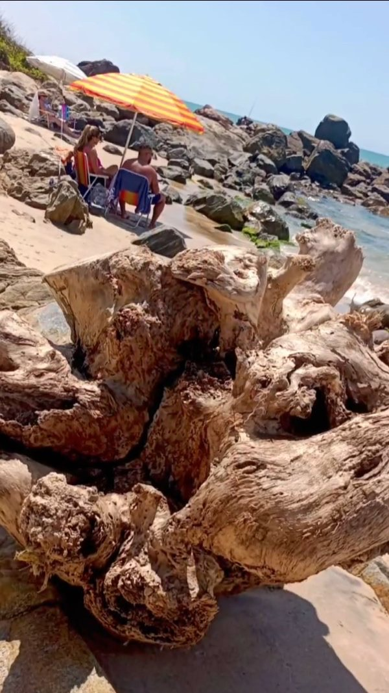
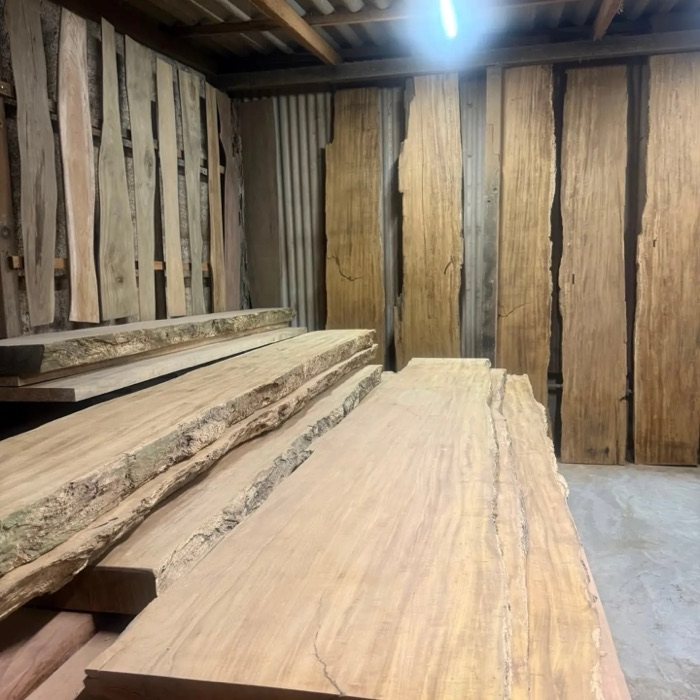
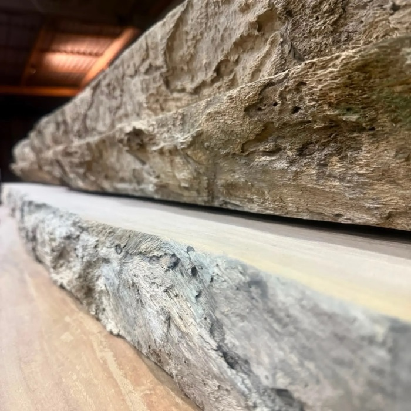
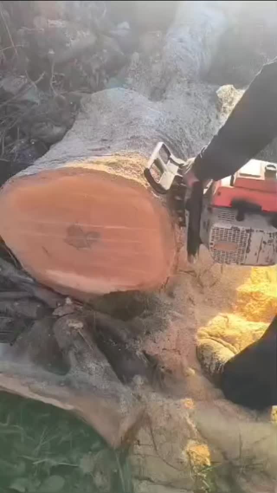
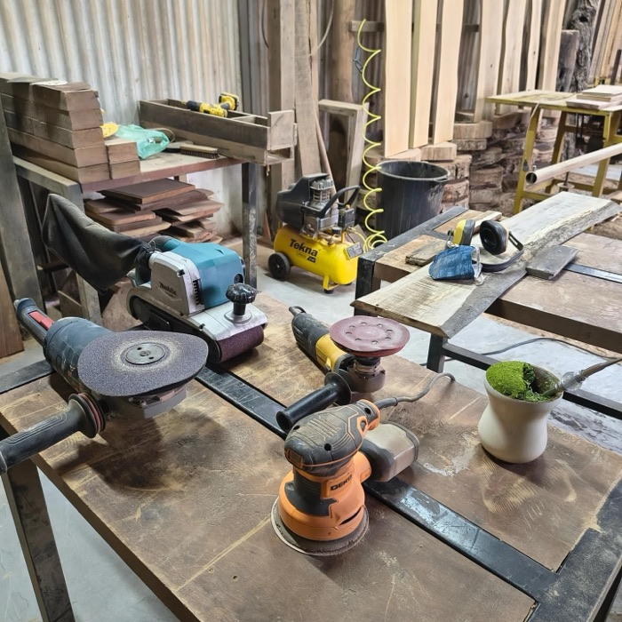
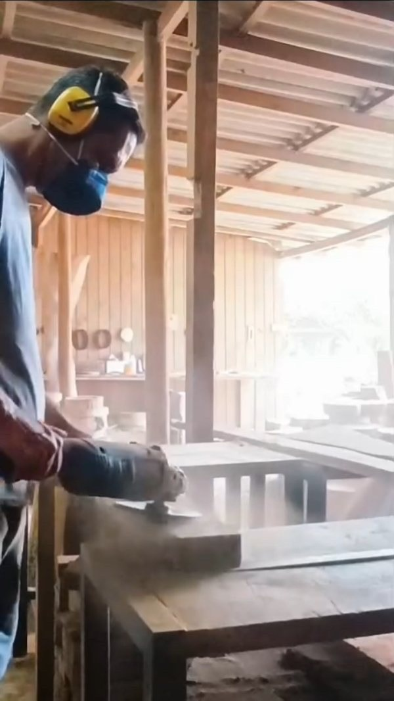
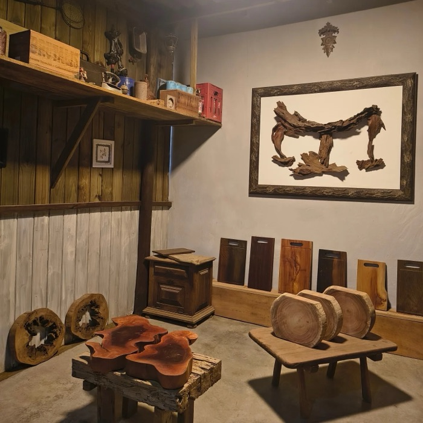
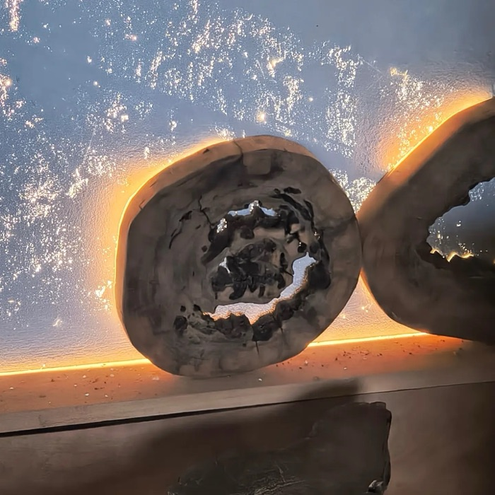

As fotos mostram peças já feitas. Como a madeira é natural, cada nova peça sai com veios, cor e forma próprios.
Novo Grave a sua marca
Veja o seu nome gravado na madeira antes de pedir.
Digite o nome da empresa, do casal ou do restaurante, ou envie o seu logo. A prévia mostra a gravação a laser numa tábua da Marécasa, e o pedido de orçamento já sai pronto no WhatsApp. A gravação é feita aqui no ateliê, na nossa própria máquina a laser.
Carregando a tábua...
Prévia ilustrativa. A gravação final acompanha os veios da peça escolhida.
Origem
Sustentabilidade é a nossa praia.
A madeira chega de praias e de descartes da região, e cada peça guarda o nome de onde veio. A coleta sustentável de matéria-prima faz parte do dia a dia do ateliê.
Jacarandá
Praia Central, Balneário Piçarras
Eucalipto limão
Praia do Grant, Barra Velha
Imbuia
Garuva
Itaúba e peroba
Madeira de praia

Coleta na praia

Pranchas no galpão

Ateliê
Da areia para a bancada.
Tudo acontece no ateliê em Balneário Piçarras, com ferramenta na mão e o bom e velho chimarrão por perto.

01
O corte
A tora é aberta e vira prancha, bolacha ou tábua. Jamelão, cerejeira, guapê: a mesma madeira tem muitos nomes.

02
A bancada
Forma, encaixe e acabamento feitos à mão, peça por peça.

03
A lixa
Cada lixa revela um potencial que poucos enxergam.

04
A peça pronta
Na simplicidade da arte, a coisa acontece. E nenhuma peça sai igual à outra.

Sob medida
Tem uma ideia de peça? A gente faz.
Mesa de jantar, tampo, bancada, prateleira, painel de parede ou tábua com a marca do seu negócio. Arquitetos e decoradores são bem-vindos.
Você conta a ideia pelo WhatsApp: ambiente, medida e uma foto de referência.
A gente mostra as madeiras que combinam com o projeto.